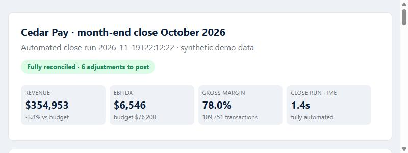
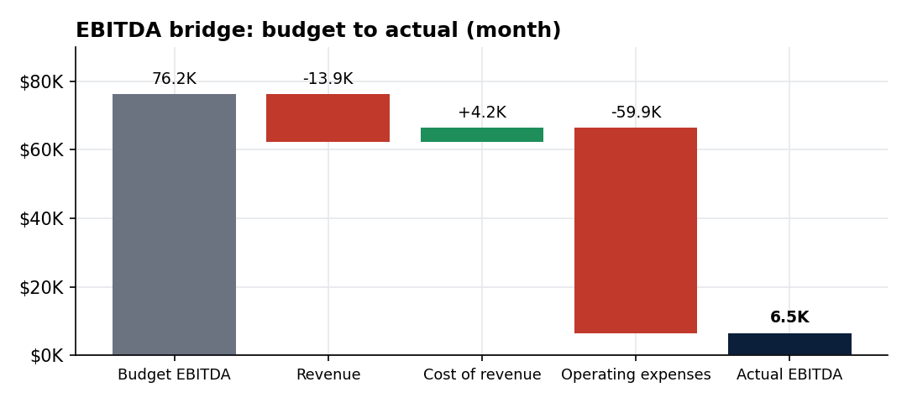
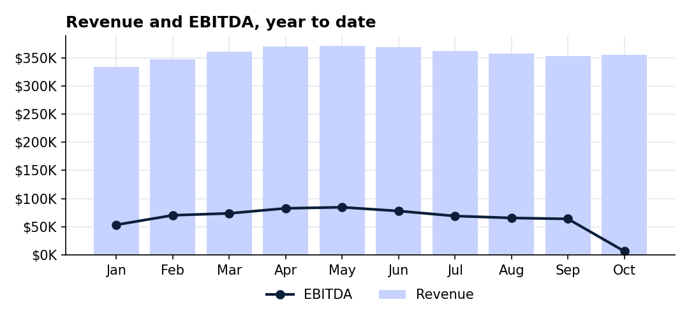

Case study · Automation
Month-End Close Automation
A Python pipeline that runs a fintech's month-end close: it reads 7 messy source systems, checks data quality, reconciles bank, revenue and payroll with automatic root-cause hints, explains budget variances, and writes the management pack. It rebuilds, with synthetic data, the kind of automation that cut close reporting time by 80% in my current role.

The problem
Month-end close at a payments company means pulling exports from the ERP, the transaction platform, two banks and payroll, each in its own format, then reconciling them by hand in Excel. It takes days, mistakes slip through, and the hardest part is explaining why the numbers differ.
The data
Cedar Pay is a fictional money-transfer and bill-payment company. A generator creates 10 months of realistic extracts, about 110,000 transactions a month in USD, LBP and EUR, with the formats real systems produce: an Excel bank statement with a header block, a European CSV (1.234,56), mixed date formats and gzipped JSON. October has planted problems: duplicate journals, cut-off errors, a missing employee accrual, a keying error and unrecorded bank charges.
The pipeline
- Ingest: one reader per source system, standardizing dates, number formats and currencies.
- Data-quality rules: duplicates, cut-off, missing cost centers, unknown accounts, unbalanced journals and bank balance continuity. Every action is logged; nothing is silently dropped.
- SQL warehouse: idempotent loads into SQLite, with the P&L built by a single SQL query.
- Reconciliations: bank (matched by reference, then by amount and date), platform revenue and payroll, each with a root-cause hint.
- Variance analysis: materiality screening (≥ $5K and ≥ 10%) and plain-English commentary built from the underlying journals.
- Outputs: a 9-sheet Excel pack, an HTML email summary, a run log, and an exit code that stops the close when something is unexplained.
What it found in October
| Item | Amount | Root cause (found automatically) |
|---|---|---|
| Bill-payment revenue | −$857 | Equals the fees from 31 Oct: last day not posted (cut-off) |
| FX revenue | +$981 | Equals the fees on reversed deals, wrongly recognized |
| Payroll (TECH) | −$4,617 | Equals one employee's cost: a new joiner not accrued |
| Bank B (EUR) | −€180 | Keying error: €7,425 booked as €7,245 |
| Bank A (USD) | −$1,048 | Bank charges on the statement but not booked |
| Bank A (USD) | $11K / $78K | Deposit in transit and outstanding payment (timing) |
Plus 6 data-quality warnings handled: a duplicate journal, a November posting, an ISO date, missing cost centers, duplicate transactions and missing fees. January to September close with zero open items, which the tests check.
Explaining the month
EBITDA came in at $6.5K against a $76.2K budget. The pipeline flags the two material overspends and writes the explanation from the journals: a $38K outdoor brand campaign and a $22K statutory audit fee, neither of which was budgeted for October.


Why it matters
The value isn't only speed. The pipeline finds the cause of each difference and lists the exact journals to post, so the finance team reviews exceptions instead of rebuilding spreadsheets. It's tested and scheduled, and it stops itself if anything is left unexplained.
Synthetic data for a fictional company. The design mirrors real close processes, not any employer's systems.